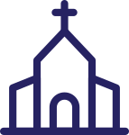
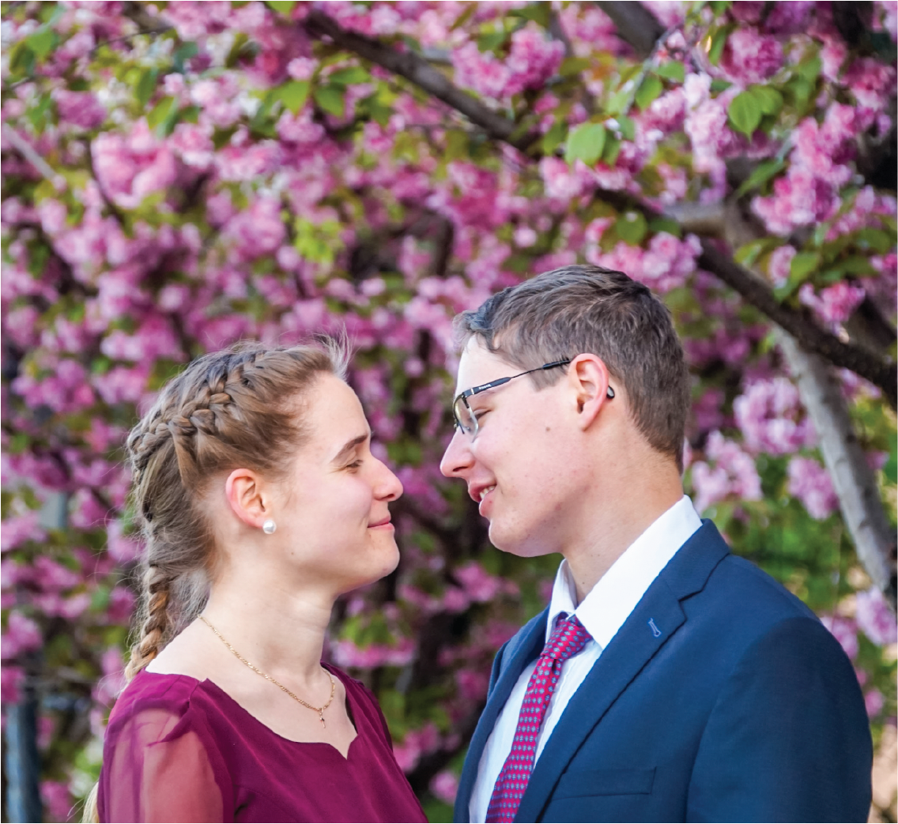

Kedves Családunk és Barátaink!
Nagy szeretettel hívunk, hogy együtt ünnepeljünk azon a napon, melyen összekötjük életünket.

A nászmise után szívesen látunk mindenkit beszélgetésre és agapéra a plébánia udvarán.
A templom környékén kevés a parkolóhely, javasoljuk a tömegközlekedéssel való érkezést (például 4-6, 17 villamos Mechwart liget megállótól 5 perc séta).
